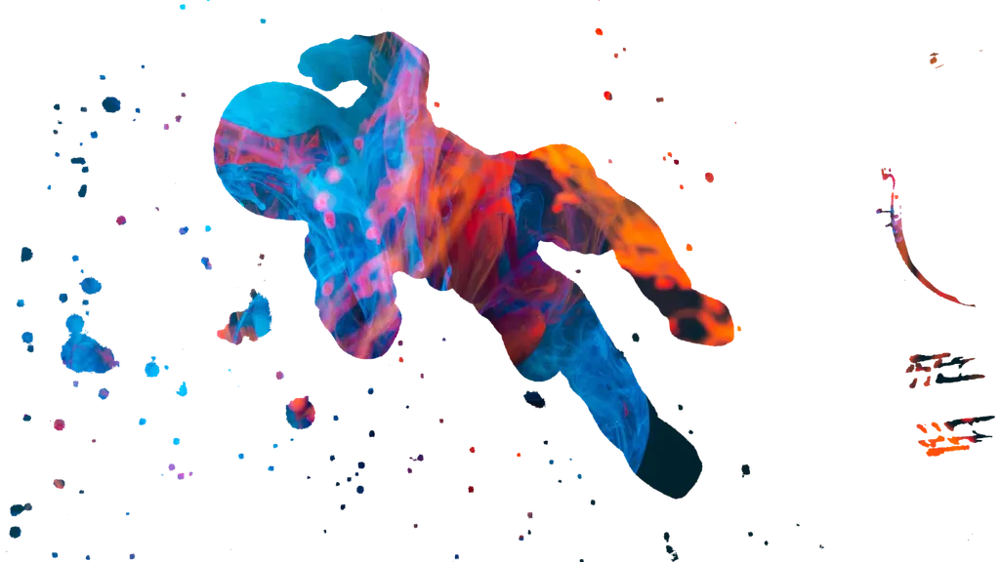
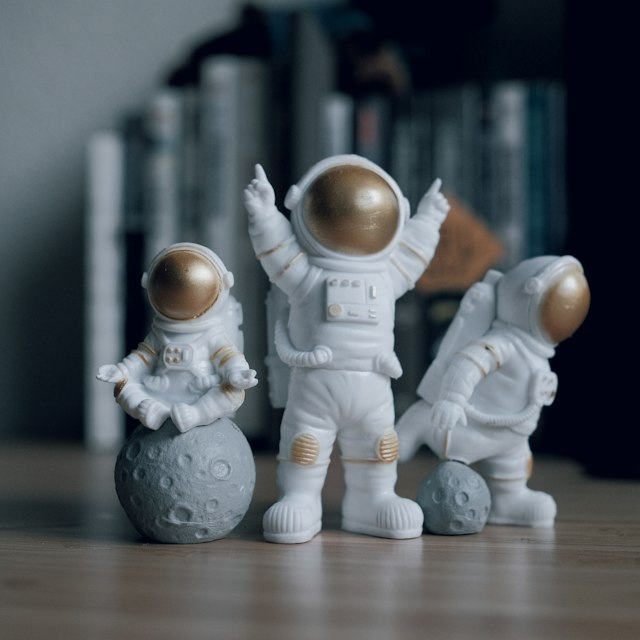

Get started with AstroWind to create a website using Astro and Tailwind CSS
Build a site with the free AstroWind template for Astro and Tailwind CSS. Create the project, edit the home page, publish a post and deploy it.
Free & open source
AstroWind is a free, customizable and production-ready template for Astro v7 + Tailwind CSS v4.AstroWind: Production-ready.Suitable for Startups, Small Business, SaaS websites, Professional Portfolios, Marketing websites, Landing Pages & Blogs.

TL;DR
For the people who scroll past the features and ask “how do I run it?”. This is how.
$ npm create astro@latest -- --template arthelokyo/astrowindAnswer the prompts, run npm run dev, open localhost:4321. The demo site is now yours to edit. The only requirement is a current Node.js.
An AGENTS.md and step-by-step skills tell Claude Code, Cursor or any coding assistant how this template works. Ask it for a page; it knows where things go.
Use it for client work, side projects or the company site. Star the repo if it saves you an afternoon.
Features
One of the most professional and comprehensive templates currently on the market. Most starred & forked Astro theme in 2022, 2023, 2024 and 2025.
A seamless integration between two great frameworks that offer high productivity, performance and versatility. Now powered by Tailwind CSS v4.
Widgets made with Tailwind CSS v4 ready to be used in Marketing Websites, SaaS, Blogs, Personal Profiles, Small Business...
Creating secure, efficient, and user-friendly websites that deliver exceptional experiences and lasting value.
Having a good page speed impacts organic search ranking, improves user experience (UI/UX) and increase conversion rates.
SEO lies in its ability to enhance a website's visibility, driving organic traffic and enabling it to reach a wider audience.
Embracing a culture that is open to new ideas and contributions is integral fostering innovation, collaboration, and a dynamic user experience.
Inside template
Benefiting from the performance and developer-friendly features of this modern static site generator.
Facilitating rapid design and consistent styling with this highly popular utility-first CSS framework.
Ensure your website looks and functions consistently across various web browsers, delivering a seamless experience to all users.
Tailor the template effortlessly to match your brand's identity and requirements, making your website distinct and saving you time.
Explore various layout options to find the structure that best presents your content, enhancing user engagement and navigation.
Ensure your website's optimal performance on various devices and screen sizes, providing a consistent and enjoyable user experience.
Seamlessly incorporate images, videos, and multimedia elements that enhance your content and engage visitors effectively.
Captivate your audience with interactive elements, intuitive navigation, and visually appealing layouts, encouraging longer visits.
Ensure your website stays aligned with the latest trends and technologies through regular updates and enhancements.
Skip the time-consuming process of building a website from scratch and launch your online presence sooner with AstroWind.
Join the growing AstroWind community for insights, resources, and assistance, ensuring you're never alone on your web development journey.

Step 1: Download
Kickstart with GitHub! Either fork the AstroWind template or simply click 'Use this template'. Your canvas awaits, ready for your digital masterpiece. In just a few clicks, you've already set the foundation.
Step 2: Add content
Pour your vision into it. Add images, text, and all that jazz to breathe life into your digital space. Remember, it's the content that tells your story, so make it captivating.
Step 3: Customize styles
Give it your personal touch. Tailor colors, fonts, and layouts until it feels just right. Your unique flair, amplified by AstroWind! Precision in design ensures a seamless user experience.
Ready!
Components
Provides frequently used components for building websites using Tailwind CSS v4
Ever tried driving without GPS? Boom! That's why websites need headers for direction.
Picture a superhero landing – epic, right? That's the job of a Hero section, making grand entrances!
Where websites strut their stuff and show off superpowers. No holding back on the bragging rights here!
Dive into the meat and potatoes of a site; without it, you'd just be window shopping. Content is king.
That enthusiastic friend who's always urging, "Do it! Do it!"? Yeah, that's this button nudging you towards adventure.
Behold the dessert menu of the website world. Tempting choices await, can you resist?
Step into the gossip corner! Here, other visitors spill the beans and share the juicy details.
Like a digital mailbox, but faster! Drop a line, ask a question, or send a virtual high-five. Ding! Message in.
The footer's like the credits of a movie but sprinkled with easter eggs. Time to hunt!
Our story
Started before Astro 1.0 shipped, shaped by every Astro release since, and by the people who kept sending pull requests.
AstroWind starts on Astro 1.0 beta with a handful of pages, a few widgets and one idea: a website can be fast, simple and good-looking at the same time.
By December it is the most starred theme in the Astro ecosystem, a place it would hold year after year. The first pull requests from strangers arrive, and they keep coming.
Astro grows fast and the template grows with it: collections for content, better images, page transitions. The blog matures, the widgets double, the road to 1.0 begins, and more people than ever send pull requests.
Astro 4, and a year of small, careful improvements, most of them sent in by contributors: accessibility, tooling, ways to edit and ways to deploy. Three thousand stars by September.
Astro 5 and regular updates. Fewer commits, nothing broken, and the stars kept coming: five thousand by October.
Two framework majors in one year. The template gets a new generation of widgets, complete landing pages, a blog that finally reads like documentation, and a guide so coding assistants know their way around.
Four years after the first commit, the demo has no placeholders left: every page, every landing page and every post is real, and the template is ready for whatever comes next.
The blog is used to display AstroWind documentation. Each new article will be an important step that you will need to know to be an expert in creating a website using Astro v7 + Tailwind CSS v4. Astro is a very interesting technology. Thanks.
Build a site with the free AstroWind template for Astro and Tailwind CSS. Create the project, edit the home page, publish a post and deploy it.

Customize the AstroWind Astro template to your brand. Light and dark colors, fonts, logo, favicons, header and footer, and tokens for your own components.

Curated free tools and resources for building websites in 2026. Inspiration, UI kits, icons, illustrations, photos, colors, fonts, mockups and more.

What a landing page is, the six types with examples, the anatomy of one that converts, copy, forms, speed, SEO, testing and a launch checklist.
FAQs
The questions people ask before they clone the repository, answered briefly. For step-by-step tasks, the repository ships skills your AI coding assistant can follow.
A free, open-source template for Astro and Tailwind CSS: a static site with a header, footer, twenty-plus reusable widgets, a Markdown/MDX blog, dark mode, RTL support, image optimisation, SEO metadata and an RSS feed, ready to be customised and deployed anywhere static files are served.
A current Node.js (the exact minimum is in package.json) and a terminal. Run npm create astro@latest -- --template arthelokyo/astrowind, then npm run dev. Site name, URL, metadata and blog options live in src/config.yaml; colours and fonts in src/components/CustomStyles.astro.
Yes. Set apps.blog.isEnabled: false in src/config.yaml and the blog routes, the RSS feed and the post widgets disappear from the build. The rest of the template is unaffected.
Colours are CSS variables in src/components/CustomStyles.astro (light and dark), fonts are configured in astro.config.ts through Astro’s Fonts API, and the logo is src/components/Logo.astro. The same variables also feed the shadcn/ui-compatible tokens, so shadcn-style components pick up your theme.
It is built for it. The repository includes AGENTS.md with the project conventions and a .agents/skills/ folder with step-by-step guides for common tasks (disable the blog, set an Open Graph image, deploy under a base path, connect a CMS, deploy to Cloudflare…), so tools like Claude Code, Codex or Cursor can do them reliably.
Anywhere that serves static files: Vercel, Netlify, Cloudflare, GitHub Pages, an nginx container (a Dockerfile is included) or your own server. The template is MIT licensed and free for personal and commercial projects.
Free, open source and production-ready.
Clone it, replace the content and deploy.